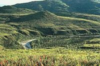

Chantada
 De: La Frikipedia, la enciclopedia extremadamente seria.
De: La Frikipedia, la enciclopedia extremadamente seria.
| De la serie pueblos del mundo:
|
| Chantada
|

|

|
| (Bandera)
|
(Escudo de armas)
|
|
| Topónimo oficial
|
Chantalinos
|
| País
|
IV Reich Galaico
|
| Código postal
|
Usan los berridos de cabras y ovejas para comunicarse
|
| Superficie
|
Toda ocupada por cientos de pinos, vacas, robles, vacas y más ganado
|
| Altitud
|
-3 metros bajo el nivel del mar
|
| Distancia
|
A 3 años luz de cualquier civilización
|
| Fundación
|
Año 6 por Darth Valatar
|
| Población
|
3 cowboys, 50 mil cani y 1 vane
|
| Gentilicio
|
Chantados, Chanta-de-estos
|
| Alcalde
|
Uno que era antes del PPSOE y ahora es asmático
|
| Es sitio importante en la ruta de la Seda
|
Chantada es la ciudad más poblada del IV Reich Galaico, situada al norte de Espiña, norte de Portugal y sur de Inglaterra. Sus habitantes se reconocen a sí mismos como canis, playboys y cowboys, aunque en realidad son gays, emos, cantantes y vacas.
Historia
Se cree que Chantada fue fundada por Hércules cuando éste requería un picadero para llevarse las vacas robadas a Astérix y poder inseminarlas a gusto en un rincón apartado de la galaxia.
No obstante, la versión oficial dice que fue fundada por los canis durante el reino suevo hace muchos años cuando necesitaban una ciudad de reposo entre las discotecas de Sarria y A Cañiza, y así dormir para recuperar fuerzas y dominar el mundo.
Transporte
Hasta hace unas décadas se decía que Chantada era una aldea porque su red de transporte público parecía una red de transporte para cabras, pero gracias a las subvenciones de Curro Jiménez, actualmente existe una línea de autobús que conecta Vigo con Chantada (pasando por Ribadavia, vaya usté a saber por qué) y una caretera nacional que une Chantada Oeste con Chantada Norte (el resto de Chantadas fueron habitadas por emigrantes ilegales de Mordor y no entra ni Sauron allí).
Lugares famosos
 Vista panorámica de Chantada
- Tierras del Asma: el sitio es tan frío y húmedo (gracias a Paquiño) que aquí todo el mundo tiene asma, lo que hizo que se formase un partido político, el INTA (Independentes Terra do Asma).
- Puntos Juveniles: hay tantos jóvenes en Chantada (en realidad sólo hay un joven realmente humano y está en un museo) que tienen dos oficinas moñicipales para la juventud.
- Casa da Xuventude: donde se guarda una vitrina con el último joven de Chantada en su interior, como pieza de museo, en la calle general Franco.
- Pazo do Piñeiro: palacio donde se celebran misas negras, rojas y orgías de políticos a cuenta del ayuntamiento.
- Bares de Chantada: solo son tres en la calle Falange Española.
Si, querido amigo, todas las calles de Chantada están dedicadas al Movimiento Nacional.
Festejos de Chantada
Los señores feudales de Chantada entrenándose para las elecciones municipales
- Carnavales: en esta época del año bajan los castrexos de sus castros y hacen ceremonias religiosas por todo el municipio (orgías, ir a votar, sacrificios de vacas y luego pasearse con sus cabezas por los bosques, etc). Para atraer público homosexual inventaron el domingo lambedoiro, día en el cual se monta una gran orgía en las calles que ni Chueca, a base de lamerse unos a otros.
- Feira do Viño: único día del año en que se pueden ver jóvenes por Chantada. Van todos en grupos con camisetas con el escudo de su señor feudal, se emborrachan y montan orgías en las selvas de carballos y pinos, sin saber con quién ni de qué sexo es.
- Folión de carros de combate: el ejército de Chantada saca sus misiles ICBM en carrozas tiradas por bueyes, y las vacas arrastran carros llenos hasta los topes de piñas explosivas. Se puede ver a los alegres viejetes chantadinos con sus misiles anticarro "Caxato R-7", las gallinas portar AK-47 bajo el ala y los cerdos con sus AK-103.
- Subida a Chantada: único día del año en que se puede ver a todos los canis de Galicia juntos dentro de latas autopropulsadas. Los ganadores de tal concurso suelen ser sacrificados en honor al dios Lugh.
- Castañazo Rock: día que se inventaron las ancianitas de Chantada para poder follar a jóvenes jebis y poder rejuvenecer la raza chantadina frisón (en vano).
Chantadinos ilustres
- Fran Vázquez: ex-cabo primero del ejército de las Juventudes Chantadinas. Como se pasó al Carlismo todo el mundo abomina de él.
- Xohán de Requeso: poeta en lengua gñapés, famoso por devorar quesos todo el tiempo y no tener asma.
- Francisco González: director del BBVA.
- Freddie Mercury: en realidad nació aquí. Sí, su gran voz le vino de su niñez como pastor, llamando a las ovejas y cabras (que luego violinaba) desde lo alto de las montañas.
- Alberto Núñez Feijóo: aquí fraguó su odio a Baltar, porque todo el mundo le comparaba con él.
- Emilio Pérez Torito: nació en el concurso de ganado frisón que se celebra aquí, de una vaca marxista-leninista y un curandero sumerio que pasaba por allí en peregrinaje a Carballiño.
- José Luis Rodríguez Zapatero y Mariano Rajoy: ambos regresan a la feria de ganado que les vio nacer una vez por año pero en secreto.
- Rouco Varela: aquí aprendió a hacerse amigo de los cowboys y montar alegres potrillos, que luego malvendía a Disney.
- Escrivá de Balaguer: nació en el Monte Falo, de los amores del dios Pan con una cabra de origen magrebí alemán (por eso San Escrivá es tan masoca). Le pusieron una capilla en lo alto en su honor, pero los del PP no hacen más que decir que la capilla es en honor a la Virgen María.
Frikipedia 2005-2016, Licencia
GFDL 1.2 - Extraído por FrikiLeaks